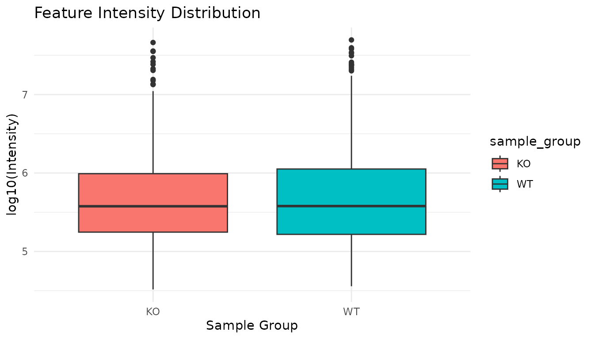
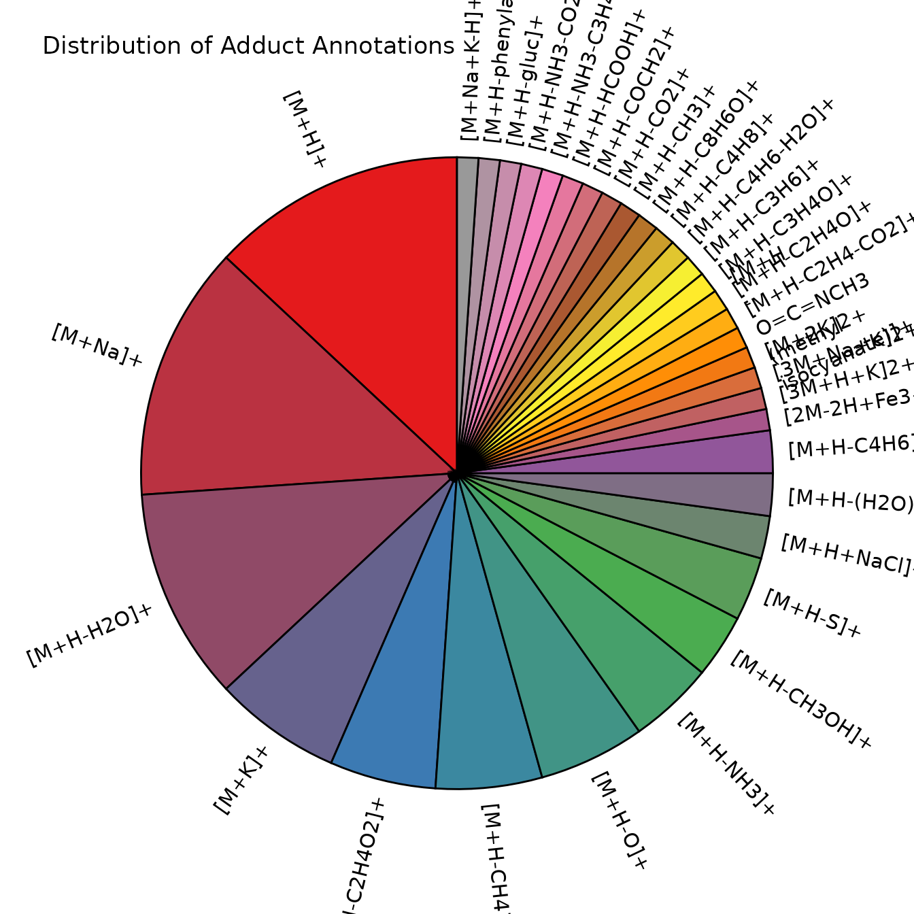

Creating Long-Format Peak Tables with Optional Annotations
Source:vignettes/long-format-peaklist.Rmd
long-format-peaklist.RmdIntroduction
The tidyXCMS package provides functions to work with
XCMS metabolomics data in a tidy, long-format structure. This vignette
demonstrates how to use the tidy_peaklist() function to
create peak tables from XCMS results.
The resulting long-format table has one row per feature per sample, integrating:
- Peak detection results from XCMS
- Feature grouping (correspondence) information
- Sample metadata
This structure makes the data ideal for downstream analysis with
tidyverse tools like dplyr and ggplot2.
You can optionally enhance these tables with additional annotations, which we’ll explore later in this vignette.
Setup
library(tidyXCMS)
#> Warning: replacing previous import 'S4Arrays::makeNindexFromArrayViewport' by
#> 'DelayedArray::makeNindexFromArrayViewport' when loading 'SummarizedExperiment'
library(xcms)
library(BiocParallel)
library(dplyr)
library(ggplot2)
library(tidyr)
library(MsExperiment)
# Optional packages for enhanced functionality
# Install if needed: BiocManager::install("MsFeatures"),
# remotes::install_github(c("stanstrup/IonFamilies", "showteeth/ggpie"))
if (requireNamespace("MsFeatures", quietly = TRUE)) library(MsFeatures)
if (requireNamespace("IonFamilies", quietly = TRUE)) library(IonFamilies)
if (requireNamespace("ggpie", quietly = TRUE)) library(ggpie)Example Workflow
Load Example Data
We’ll use the xmse dataset from XCMS, which contains
preprocessed LC-MS data from wild-type and knockout samples. This
dataset already has peak detection and feature grouping completed.
# Load example data from XCMS (already preprocessed)
xdata <- loadXcmsData("xmse")Examine Sample Metadata
Let’s check what sample information is available:
sampleData(xdata)
#> DataFrame with 8 rows and 4 columns
#> sample_name sample_group spectraOrigin sample_type
#> <character> <character> <character> <character>
#> 1 ko15 KO /usr/local... QC
#> 2 ko16 KO /usr/local... study
#> 3 ko21 KO /usr/local... study
#> 4 ko22 KO /usr/local... QC
#> 5 wt15 WT /usr/local... study
#> 6 wt16 WT /usr/local... study
#> 7 wt21 WT /usr/local... QC
#> 8 wt22 WT /usr/local... study
# Check results
cat("Dataset contains", nrow(chromPeaks(xdata)), "peaks across",
length(unique(chromPeaks(xdata)[, "sample"])), "samples,",
"grouped into", nrow(featureDefinitions(xdata)), "features\n")
#> Dataset contains 3651 peaks across 8 samples, grouped into 351 featuresFix File Paths
The example data contains file paths from the original system. We need to update them to match the current system:
# Get the correct base path for faahKO package on this system
cdf_path <- file.path(find.package("faahKO"), "cdf")
# Find all CDF files recursively in the cdf_path directory
real_paths <- list.files(cdf_path, recursive = TRUE, full.names = TRUE)
# Create a mapping table using basenames for safe matching
path_mapping <- tibble(
real_path = real_paths,
basename_file = basename(real_paths)
)
# Join with spectra dataOrigin by basename and replace
spectra_df <- tibble(dataOrigin = spectra(xdata)$dataOrigin) %>%
mutate(basename_file = basename(dataOrigin)) %>%
left_join(path_mapping, by = "basename_file")
spectra(xdata)$dataOrigin <- spectra_df$real_pathCreating a Basic Long-Format Peak Table
Let’s start by creating a long-format peak table directly from the XCMS results. This gives us all the essential peak information in a tidy format.
# Create basic peak table
peak_table <- tidy_peaklist(xdata)
# Check the structure
dim(peak_table)
#> [1] 2808 28
# View first few rows
head(peak_table)
#> # A tibble: 6 × 28
#> sample_name sample_group spectraOrigin sample_type fromFile feature_id f_mzmed
#> <chr> <chr> <chr> <chr> <dbl> <int> <dbl>
#> 1 ko15 KO /usr/local/l… QC 1 1 200.
#> 2 ko15 KO /usr/local/l… QC 1 2 205
#> 3 ko15 KO /usr/local/l… QC 1 3 206
#> 4 ko15 KO /usr/local/l… QC 1 4 207.
#> 5 ko15 KO /usr/local/l… QC 1 5 233
#> 6 ko15 KO /usr/local/l… QC 1 6 241.
#> # ℹ 21 more variables: f_mzmin <dbl>, f_mzmax <dbl>, f_rtmed <dbl>,
#> # f_rtmin <dbl>, f_rtmax <dbl>, ms_level <int>, filepath <chr>,
#> # filename <chr>, peakidx <dbl>, mz <dbl>, mzmin <dbl>, mzmax <dbl>,
#> # rt <dbl>, rtmin <dbl>, rtmax <dbl>, into <dbl>, intb <dbl>, maxo <dbl>,
#> # sn <dbl>, is_filled <lgl>, merged <lgl>
# Check column names
colnames(peak_table)
#> [1] "sample_name" "sample_group" "spectraOrigin" "sample_type"
#> [5] "fromFile" "feature_id" "f_mzmed" "f_mzmin"
#> [9] "f_mzmax" "f_rtmed" "f_rtmin" "f_rtmax"
#> [13] "ms_level" "filepath" "filename" "peakidx"
#> [17] "mz" "mzmin" "mzmax" "rt"
#> [21] "rtmin" "rtmax" "into" "intb"
#> [25] "maxo" "sn" "is_filled" "merged"The resulting table contains all feature and peak information from XCMS, organized with one row per feature per sample.
Grouping Features with MsFeatures
One compound usually gives several features: its main ion, adducts,
in-source fragments and isotopes. The groupFeatures()
function from the MsFeatures package groups features that
probably come from the same compound and stores the result in a
feature_group column of featureDefinitions().
Each call can only split the groups from the previous call. Here we
first group features that elute together, and then split those groups by
the correlation of their abundances across samples:
xdata_grouped <- groupFeatures(xdata, param = SimilarRtimeParam(diffRt = 10))
xdata_grouped <- groupFeatures(xdata_grouped,
param = AbundanceSimilarityParam(threshold = 0.7,
transform = log2))
featureDefinitions(xdata_grouped) %>%
as.data.frame() %>%
count(feature_group, name = "n_features") %>%
count(n_features, name = "n_groups")
#> n_features n_groups
#> 1 1 184
#> 2 2 55
#> 3 3 13
#> 4 4 3
#> 5 6 1When the object has feature groups, tidy_peaklist()
includes the feature_group column automatically:
peak_table_grouped <- tidy_peaklist(xdata_grouped)
peak_table_grouped %>%
distinct(feature_id, feature_group, f_mzmed, f_rtmed) %>%
arrange(feature_group, f_mzmed) %>%
head(10)
#> # A tibble: 10 × 4
#> feature_id feature_group f_mzmed f_rtmed
#> <int> <chr> <dbl> <dbl>
#> 1 21 FG.001.001 281. 3669.
#> 2 46 FG.001.001 309. 3669.
#> 3 76 FG.001.001 338. 3669.
#> 4 13 FG.001.002 266. 3669.
#> 5 33 FG.002.001 300. 3405.
#> 6 35 FG.002.001 301. 3405.
#> 7 247 FG.002.002 506. 3405.
#> 8 248 FG.002.002 507. 3402.
#> 9 198 FG.002.003 449. 3405.
#> 10 261 FG.002.004 523. 3405.Annotating Isotopes and Adducts with IonFamilies
The IonFamilies
package annotates isotopes and adducts/fragments within the feature
groups. It writes the annotation to the isotopes and
adduct columns of featureDefinitions(), and
tidy_peaklist() picks up any such columns
automatically.
xdata_annotated <- xdata_grouped %>%
annotateIsotopes(IsotopologueParam(ppm = 10)) %>%
annotateAdducts(AdductVoteParam(polarity = "positive"))
peak_table_annotated <- tidy_peaklist(xdata_annotated)
peak_table_annotated %>%
filter(adduct != "") %>%
distinct(feature_id, feature_group, f_mzmed, f_rtmed, isotopes, adduct) %>%
arrange(feature_group, f_mzmed) %>%
head()
#> # A tibble: 6 × 6
#> feature_id feature_group f_mzmed f_rtmed isotopes adduct
#> <int> <chr> <dbl> <dbl> <chr> <chr>
#> 1 21 FG.001.001 281. 3669. "" [M+H-HCOOH]+ 326.203 [M+H-C…
#> 2 46 FG.001.001 309. 3669. "" [M+H-H2O]+ 326.203 [M+H]+ 3…
#> 3 76 FG.001.001 338. 3669. "" [2M+H+Na]2+ 326.203
#> 4 3 FG.005.001 206 2789. "" [M+H-C4H6O]+ 275.037
#> 5 54 FG.005.001 314 2789. "" [M+K]+ 275.037
#> 6 2 FG.005.002 205 2790. "" [M+H-C3H9N]+ 263.066The adduct column shows the best suggestions for each
feature as text. All suggestions, ranked, are available from
IonFamilies::adductHints().
Understanding the Output
The resulting tibble contains comprehensive information about each feature in each sample. Below is a complete description of all columns:
Column Reference Table
The table has been organized into logical groups for easier understanding:
| Column | Content |
|---|---|
| Sample information | |
filepath |
Path to the raw data file |
filename |
The filename without path |
fromFile |
The file number (the order files were supplied in) |
Plus any columns from sampleData() |
Sample metadata columns (e.g., sample_name, sample_group, sample_type) |
| Feature identifiers | |
feature_id |
The index of the feature after grouping across samples |
peakidx |
The index of the peak before grouping across samples |
| Feature-level m/z statistics (across all samples) | |
f_mzmed |
The median m/z found for that feature across samples |
f_mzmin |
The minimum m/z found for that feature across samples |
f_mzmax |
The maximum m/z found for that feature across samples |
| Feature-level retention time statistics (across all samples) | |
f_rtmed |
The median retention time found for that feature across samples |
f_rtmin |
The minimum retention time found for that feature across samples |
f_rtmax |
The maximum retention time found for that feature across samples |
| Feature grouping and annotation | |
feature_group |
The feature group ID from MsFeatures (e.g., “FG.001.001”) - features with the same ID probably come from the same compound |
isotopes |
Isotope annotation (e.g., “[1][M]+”, “[1][M+1]+”), from
featureDefinitions() (e.g. IonFamilies) |
adduct |
Adduct/fragment annotation (e.g., “[M+H]+ 169.037”), from
featureDefinitions() (e.g. IonFamilies) |
| Peak-level m/z measurements (in that specific sample) | |
mz |
The median m/z found for that feature in that sample |
mzmin |
The minimum m/z found for that feature in that sample |
mzmax |
The maximum m/z found for that feature in that sample |
| Peak-level retention time measurements (in that specific sample) | |
rt |
The retention time found for that feature in that sample |
rtmin |
The minimum retention time found for that feature in that sample |
rtmax |
The maximum retention time found for that feature in that sample |
| Peak intensity measurements | |
into |
The area under the peak |
intb |
The area under the peak after baseline removal |
maxo |
The maximum intensity (i.e., height) of the peak |
sn |
The signal to noise ratio of that peak |
| Gaussian peak fitting parameters | |
egauss |
RMSE of Gaussian fit |
mu |
Gaussian parameter mu (center of the Gaussian; unit is scan number) |
sigma |
Gaussian parameter sigma |
h |
Gaussian parameter h (height of the Gaussian peak) |
| CentWave algorithm parameters | |
f |
Region number of m/z ROI where the peak was localized |
dppm |
m/z deviation of mass trace across scans in ppm |
scale |
Scale on which the peak was localized |
scpos |
Center of peak position found by wavelet analysis |
scmin |
Left peak limit found by wavelet analysis (scan number) |
scmax |
Right peak limit found by wavelet analysis (scan number) |
| Additional columns | |
ms_level |
MS level (e.g., MS1, MS2) |
is_filled |
Was the intensity found by gap filling (TRUE) or peak picking (FALSE) |
Important notes:
- Each row represents one feature in one sample
- If a feature was not detected in a sample, peak-level columns (mz,
rt, into, etc.) will be
NA - Feature-level statistics (f_mzmed, f_rtmed, etc.) are always present and represent values across all samples
-
feature_groupis only present whengroupFeatures()was applied -
isotopesandadductare only present when they are infeatureDefinitions()(e.g. from IonFamilies) - All of these apply at the feature level and are the same across all samples for a given feature
- The distinction between “feature-level” and “peak-level” is
important:
-
Feature-level (prefix
f_): Statistics aggregated across all samples - Peak-level (no prefix): Values for the specific peak in that specific sample
-
Feature-level (prefix
Annotations
When the object has feature groups and annotations, these columns are available:
-
feature_group: Feature group ID -
isotopes: Isotope annotation (e.g., “[1][M]+”, “[1][M+1]+”) -
adduct: Adduct/fragment annotation (e.g., “[M+H]+ 169.037”)
peak_table_annotated %>%
filter(adduct != "") %>%
distinct(feature_id, f_mzmed, f_rtmed, feature_group, isotopes, adduct) %>%
head()
#> # A tibble: 6 × 6
#> feature_id f_mzmed f_rtmed feature_group isotopes adduct
#> <int> <dbl> <dbl> <chr> <chr> <chr>
#> 1 2 205 2790. FG.005.002 "" [M+H-C3H9N]+ 263.066
#> 2 3 206 2789. FG.005.001 "" [M+H-C4H6O]+ 275.037
#> 3 4 207. 2719. FG.078.001 "" [M+H-S-NH3-HCOOH]+ 301.103
#> 4 21 281. 3669. FG.001.001 "" [M+H-HCOOH]+ 326.203 [M+H-C…
#> 5 22 281. 2787. FG.005.002 "" [M+NH4]+ 263.066
#> 6 27 284. 2720. FG.078.001 "" [M+H-H2O]+ 301.103Peak-Level Information
For each feature in each sample:
-
mz,rt: Detected peak position -
into: Integrated peak intensity -
intb: Baseline-corrected intensity -
maxo: Maximum intensity -
sn: Signal-to-noise ratio
# View detected peaks (non-NA intensities)
peak_table %>%
filter(!is.na(into)) %>%
select(feature_id, filename, mz, rt, into, sn) %>%
head()
#> # A tibble: 6 × 6
#> feature_id filename mz rt into sn
#> <int> <chr> <dbl> <dbl> <dbl> <dbl>
#> 1 1 ko15.CDF 200. 2933. 135162. NA
#> 2 2 ko15.CDF 205 2792. 1924712. 64
#> 3 3 ko15.CDF 206 2790. 213659. 14
#> 4 4 ko15.CDF 207. 2718. 349011. 17
#> 5 5 ko15.CDF 233 3035. 286221. 23
#> 6 6 ko15.CDF 241. 3681. 1160580. 11Sample Information
-
filename,filepath: Sample file information -
fromFile: Sample index - Plus any columns from
sampleData()(sample metadata)
peak_table %>%
select(feature_id, filename, sample_name, sample_group, sample_type) %>%
head()
#> # A tibble: 6 × 5
#> feature_id filename sample_name sample_group sample_type
#> <int> <chr> <chr> <chr> <chr>
#> 1 1 ko15.CDF ko15 KO QC
#> 2 2 ko15.CDF ko15 KO QC
#> 3 3 ko15.CDF ko15 KO QC
#> 4 4 ko15.CDF ko15 KO QC
#> 5 5 ko15.CDF ko15 KO QC
#> 6 6 ko15.CDF ko15 KO QCMissing Values
Features not detected in a sample have NA for peak-level
columns:
# Count for each feature how many samples the peak was found in
detection_rate <- peak_table %>%
group_by(feature_id, f_mzmed, f_rtmed) %>%
summarise(
n_samples_detected = sum(!is.na(into)),
n_samples_total = n(),
detection_rate = n_samples_detected / n_samples_total,
.groups = "drop"
) %>%
arrange(desc(detection_rate))
hist(detection_rate$detection_rate, breaks=10, main = "Histogram of feature detection rate")Downstream Analysis Examples
Visualize Feature Intensities
# Plot intensity distribution by sample group
peak_table %>%
filter(feature_id == 10) %>%
ggplot(aes(x = sample_group, y = log10(into), fill = sample_group)) +
geom_boxplot() +
labs(
title = "Feature Intensity Distribution",
x = "Sample Group",
y = "log10(Intensity)"
) +
theme_minimal()
Identify Features with Adduct Annotations
IonFamilies::adductHints() returns all adduct and
fragment suggestions as one table. rank == 1 is the best
suggestion for each feature:
adduct_counts <- adductHints(xdata_annotated) %>%
filter(rank == 1) %>%
count(adduct, sort = TRUE)
adduct_counts
#> adduct n
#> 1 [M+H-H2O]+ 4
#> 2 [M+H]+ 4
#> 3 [M+K]+ 3
#> 4 [M+NH4]+ 3
#> 5 [M+H-C5H10]+ 2
#> 6 [M+H-HCOOH]+ 2
#> 7 [2M+H+Na]2+ 1
#> 8 [M+H+NaCl]+ 1
#> 9 [M+H-C3H9N]+ 1
#> 10 [M+H-C4H6O]+ 1
#> 11 [M+H-CO2]+ 1
#> 12 [M+H-COCH2]+ 1
#> 13 [M+H-Leu]+ 1
#> 14 [M+H-NH3-C2H6]+ 1
#> 15 [M+H-O]+ 1
#> 16 [M+H-S-NH3-HCOOH]+ 1
#> 17 [M+H-gluc-(H2O)2]+ 1
#> 18 [M+Na]+ 1Visualize Adduct Distribution
We can create a pie chart showing how often each adduct or fragment is the best suggestion:
adduct_counts %>%
mutate(count = n) %>%
ggpie(data = .,
group_key = "adduct",
count_type = "count",
label_info = "group",
label_type = "circle",
label_size = 4,
label_pos = "out"
) +
guides(fill="none") +
ggtitle("Distribution of Adduct Annotations")
Extract Specific Features for Further Analysis
# Get a specific feature across all samples
feature_123 <- peak_table %>%
filter(feature_id == 123) %>%
select(feature_id, filename, sample_group, mz, rt, into)
head(feature_123)
#> # A tibble: 6 × 6
#> feature_id filename sample_group mz rt into
#> <int> <chr> <chr> <dbl> <dbl> <dbl>
#> 1 123 ko15.CDF KO 371. 3657. 563419.
#> 2 123 ko16.CDF KO 371. 3657. 320434.
#> 3 123 ko21.CDF KO 371. 3649. 123876.
#> 4 123 ko22.CDF KO 371. 3633. 173440.
#> 5 123 wt15.CDF WT 371. 3632. 570454.
#> 6 123 wt16.CDF WT 371. 3639. 287139.Session Info
sessionInfo()
#> R version 4.6.2 (2026-10-29)
#> Platform: x86_64-pc-linux-gnu
#> Running under: Ubuntu 26.04.1 LTS
#>
#> Matrix products: default
#> BLAS: /usr/lib/x86_64-linux-gnu/openblas-pthread/libblas.so.3
#> LAPACK: /usr/lib/x86_64-linux-gnu/openblas-pthread/libopenblasp-r0.3.32.so; LAPACK version 3.12.0
#>
#> locale:
#> [1] LC_CTYPE=C.UTF-8 LC_NUMERIC=C LC_TIME=C.UTF-8
#> [4] LC_COLLATE=C.UTF-8 LC_MONETARY=C.UTF-8 LC_MESSAGES=C.UTF-8
#> [7] LC_PAPER=C.UTF-8 LC_NAME=C LC_ADDRESS=C
#> [10] LC_TELEPHONE=C LC_MEASUREMENT=C.UTF-8 LC_IDENTIFICATION=C
#>
#> time zone: UTC
#> tzcode source: system (glibc)
#>
#> attached base packages:
#> [1] stats graphics grDevices utils datasets methods base
#>
#> other attached packages:
#> [1] ggpie_0.2.5 IonFamilies_0.99.2 MsFeatures_1.20.0
#> [4] MsExperiment_1.14.0 ProtGenerics_1.44.0 tidyr_1.3.2
#> [7] ggplot2_4.0.3 dplyr_1.2.1 xcms_4.10.1
#> [10] BiocParallel_1.46.0 tidyXCMS_0.99.40
#>
#> loaded via a namespace (and not attached):
#> [1] DBI_1.3.0 rlang_1.3.0
#> [3] magrittr_2.0.5 clue_0.3-68
#> [5] MassSpecWavelet_1.78.2 otel_0.3.0
#> [7] matrixStats_1.5.0 compiler_4.6.2
#> [9] PTMods_1.0.0 systemfonts_1.3.2
#> [11] vctrs_0.7.3 reshape2_1.4.5
#> [13] stringr_1.6.0 crayon_1.5.3
#> [15] pkgconfig_2.0.3 MetaboCoreUtils_1.20.1
#> [17] fastmap_1.2.0 XVector_0.52.0
#> [19] labeling_0.4.3 utf8_1.2.6
#> [21] rmarkdown_2.32 preprocessCore_1.74.0
#> [23] ragg_1.5.2 purrr_1.2.2
#> [25] xfun_0.62 MultiAssayExperiment_1.38.0
#> [27] cachem_1.1.0 jsonlite_2.0.0
#> [29] progress_1.2.3 DelayedArray_0.38.2
#> [31] prettyunits_1.2.0 parallel_4.6.2
#> [33] cluster_2.1.8.3 R6_2.6.1
#> [35] bslib_0.12.0 stringi_1.8.9
#> [37] RColorBrewer_1.1-3 limma_3.68.5
#> [39] GenomicRanges_1.64.0 jquerylib_0.1.4
#> [41] Rcpp_1.1.2 Seqinfo_1.2.0
#> [43] SummarizedExperiment_1.42.0 iterators_1.0.14
#> [45] knitr_1.52 IRanges_2.46.0
#> [47] Matrix_1.7-6 igraph_2.3.4
#> [49] tidyselect_1.2.1 abind_1.4-8
#> [51] yaml_2.3.12 doParallel_1.0.17
#> [53] codetools_0.2-20 affy_1.90.0
#> [55] lattice_0.23-1 tibble_3.3.1
#> [57] plyr_1.8.9 withr_3.0.3
#> [59] Biobase_2.72.0 S7_0.2.2
#> [61] evaluate_1.0.5 desc_1.4.3
#> [63] Spectra_1.22.2 pillar_1.11.1
#> [65] affyio_1.82.0 BiocManager_1.30.27
#> [67] MatrixGenerics_1.24.0 foreach_1.5.2
#> [69] stats4_4.6.2 MSnbase_2.38.1
#> [71] MALDIquant_1.22.3 ncdf4_1.24
#> [73] generics_0.1.4 hms_1.1.4
#> [75] S4Vectors_0.50.3 scales_1.4.0
#> [77] glue_1.8.1 lazyeval_0.2.3
#> [79] tools_4.6.2 ggnewscale_0.5.2
#> [81] mzID_1.50.0 data.table_1.18.6.1
#> [83] QFeatures_1.22.0 vsn_3.80.0
#> [85] mzR_2.46.0 fs_2.1.0
#> [87] XML_3.99-0.25 grid_4.6.2
#> [89] impute_1.86.0 MsCoreUtils_1.24.0
#> [91] PSMatch_1.16.0 cli_3.6.6
#> [93] textshaping_1.0.5 S4Arrays_1.12.1
#> [95] AnnotationFilter_1.36.0 pcaMethods_2.4.0
#> [97] gtable_0.3.6 sass_0.4.10
#> [99] digest_0.6.39 BiocGenerics_0.58.1
#> [101] ggrepel_0.9.8 SparseArray_1.12.3
#> [103] htmlwidgets_1.6.4 farver_2.1.2
#> [105] htmltools_0.5.9 pkgdown_2.2.1
#> [107] lifecycle_1.0.5 statmod_1.5.2
#> [109] MASS_7.3-66